...
The project consisted of the following steps,
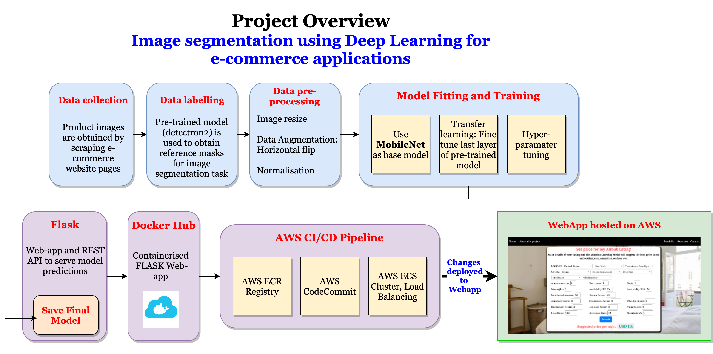
The project documentation has the following sections:
The Problem: One of the major factor that holds people back while shopping online for furniture and home decor products is that they won't be able to touch, see in person and feel how the product would fit into their home. The user has to go solely by the images of products posted on the ecommerce websites. This makes the user more hesitant while shopping online for such products.
The Solution: The project aims to address this issue by providing an option for the user to segment the product from the image and then visualise how it fits in their own home. This is done by using an Image Segmentation Model which can separate the predefined set of product categories from the rest of the image, which can then be placed on a video stream of the user's room for visualisation.
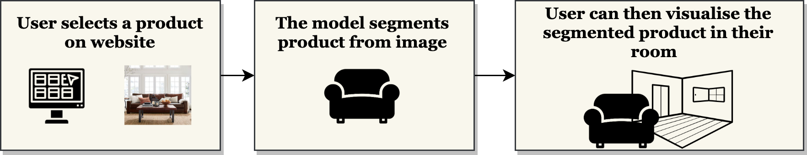
Major Challenges:
The end result of this project is shown below. The screen capture (from the app deployed on AWS) shows an example use case of the user selecting a product on a typical ecommerce website, the Image segmentation model returning the segmented product after which the user can then adjust the size and position of the product placed on the video stream of user's room.
Before deciding to use Machine Learning in any application, there are a number of factors to be considered such as what business purpose does the project serve, project constraints, performance constraints, how to evaluate the system performance. The following block diagram describes all the major considerations.
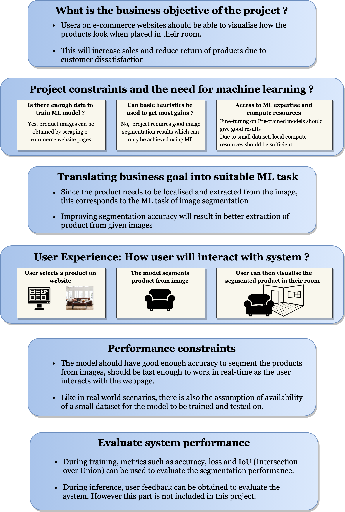
One of the major challenges in a Machine Learning project is to handle the various parts of the Data Pipeline such as Data Collection, Data Storage, Data Pre-processing and Representation, Data Privacy, Bias in Data. It is important to handle these aspects of Data pipeline and the following block-diagram answers all the questions regarding handling data.
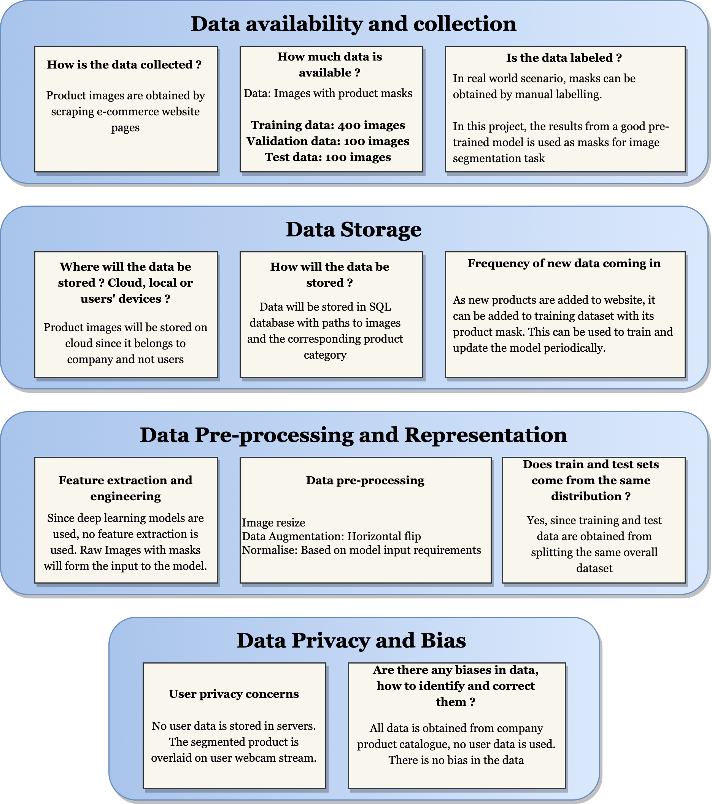
After scraping for product images and obtaining reference masks using pre-trained model, the data is stored in a JSON file (paths to images and masks). Pre-processing is then performed on this dataset after which the dataset is divided into 3 sets,
| Data | Number of Images |
|---|---|
| Training | 285 |
| Validation | 95 |
| Test | 95 |
As can be observed, this is a very small dataset which is to be used to fine-tune the pre-trained Image Segmentation Model.
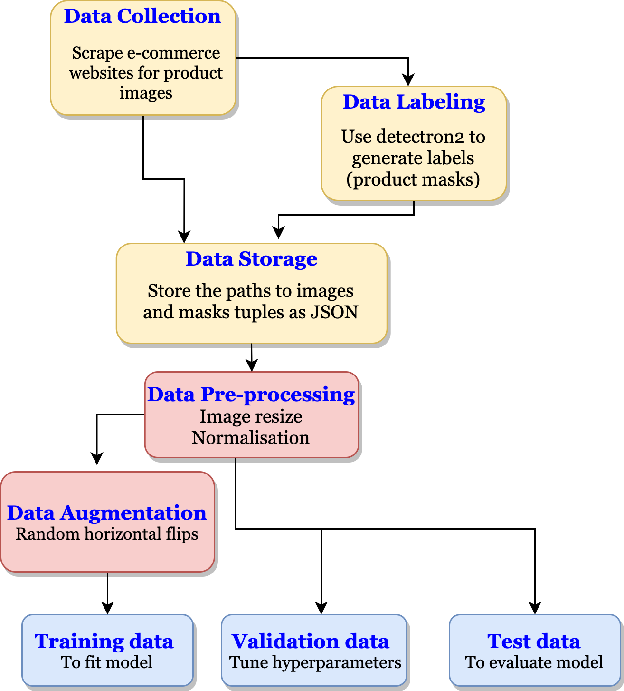
The two metrics often used for Image segmentation tasks are
The following are some of the popular Image Segmentation Models. There are two constraints due to which these models cannot be used in this application.
| Model | Size (in MB) | Evaluation Time (in seconds) | IoU |
|---|---|---|---|
| Detectron 2 | 178 MB | 0.10 seconds | 0.89 |
| Mask RCNN | 170 MB | 6.29 seconds | 0.66 |
The goal of this project is to build such a custom model which can serve two purposes sepcifically,
Although a new custom model is necessary for this application, there is no need for this custom model to be built from scratch. Instead a pre-trained model (trained on massive image datasets such as ImageNet) can be used as a base for the custom model. On top of this base model, additional layers can be added. During training, the weights and bias of the base model are fixed and not changed whereas the final layers which are added will be updated. This process is referred to as Transfer Learning where in only the last few layers are trained. After which, all the layers of the custom model can be trained with a small learning rate. This is referred to as Fine-tuning a pre-trained model.
The code block to build such a model is shown here,
The Custom Model is built with the following components,
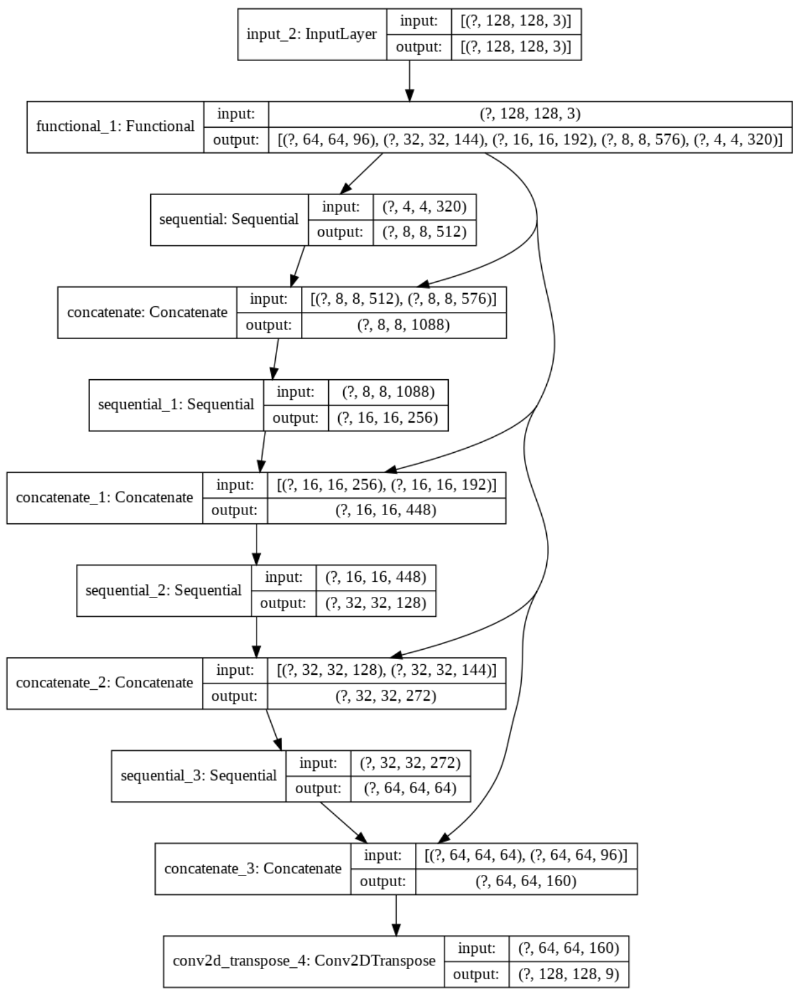
Following are the Model parameters,
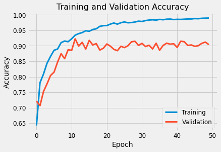
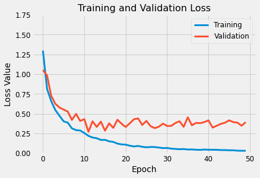
Learning Curves Observation: Both training and validation accuracy improves over the early epochs and then saturates. However a reasonably significant gap is observed between the two curves even after many epochs. This suggests that perhaps there is still some overfitting in the model and in order to
So far, the model has been trained on one given set of parameters. However in order to find out the best set of parameters, the model will need to be evaluated on several different combinations of parameters. This process is referred to as Hyper-parameter tuning. In order to avoid using the Test Data until final evaluation, a separate split of data known as Validation Dataset will be used in order to evaluate model with different sets of hyper-parameters.
Tensorflow makes it easy to perform Hyper-parameter tuning using Tensorboard. Different sets of parameters are pre-defined and the results are logged to Tensorboard, the code for which is shared here,
In this experiment, the performance of the Model is tested with various options for optimiser: Adam, SGD and RMSProp, the results for which on the Tensorboard is presented here,
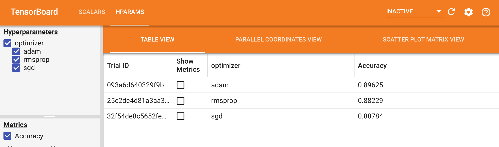
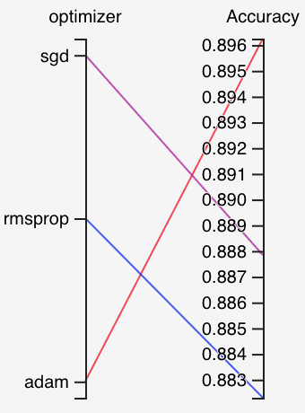
During training, one of the
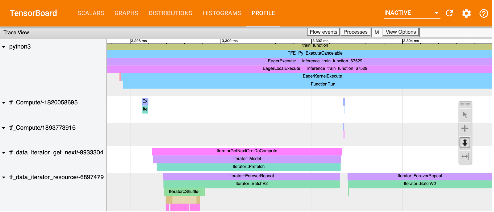
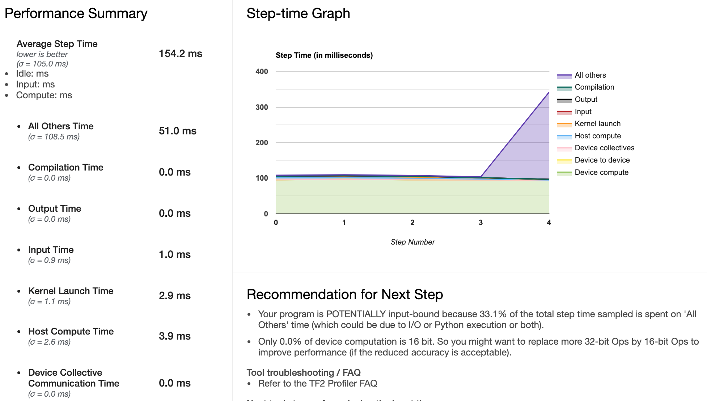
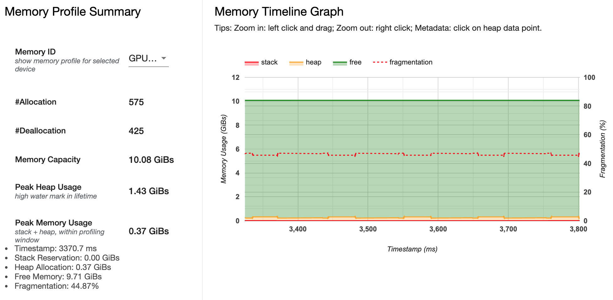
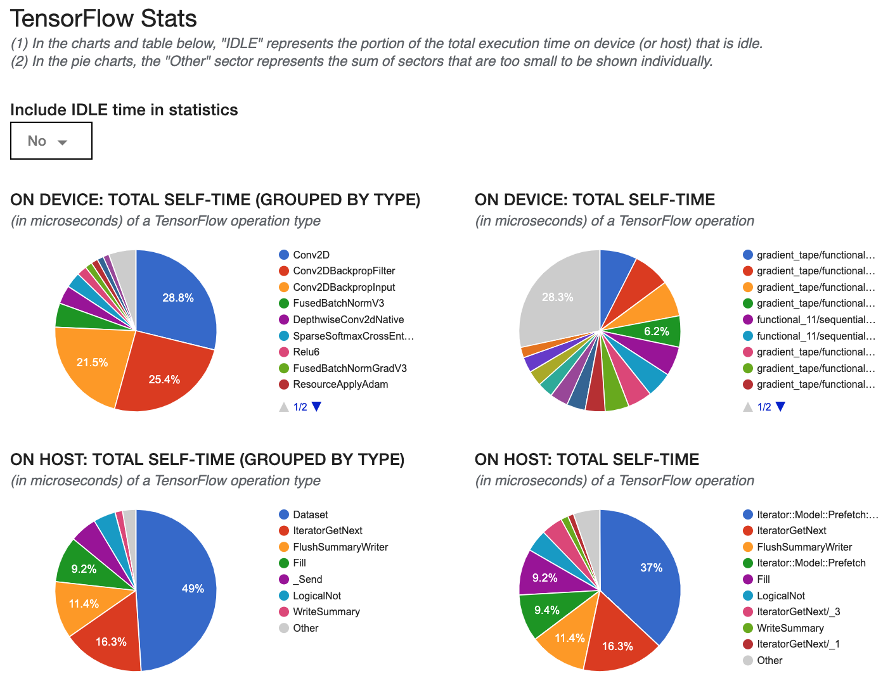
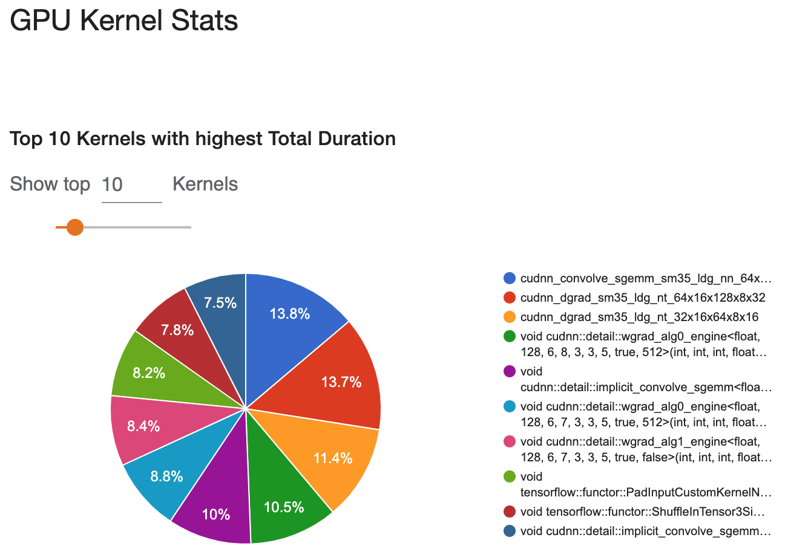
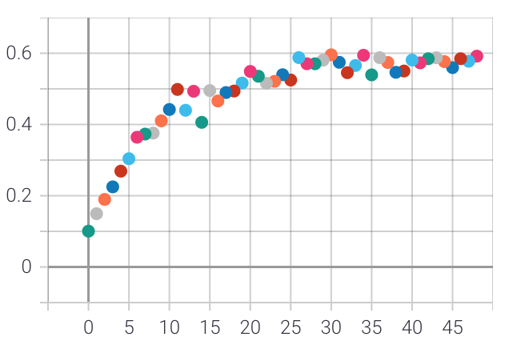
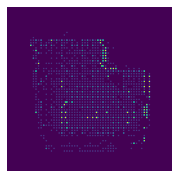
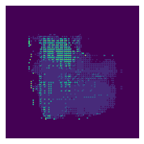
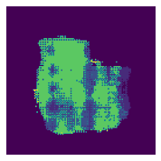
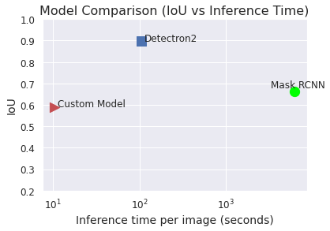
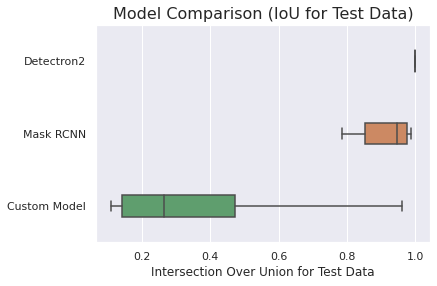
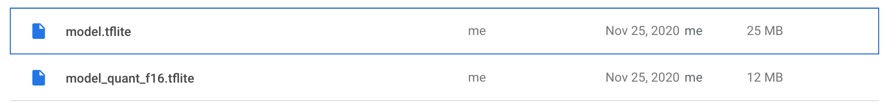
You need to think of what feedback you'd like to get from your users, whether to allow users to suggest better predictions, and from user reactions, how to defer whether your model does a good job. You should also think about how to run inferencing: on the user device or on the server and the tradeoffs between them.
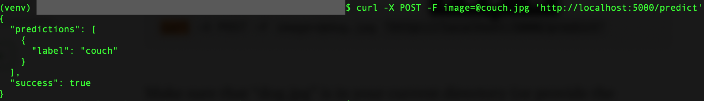
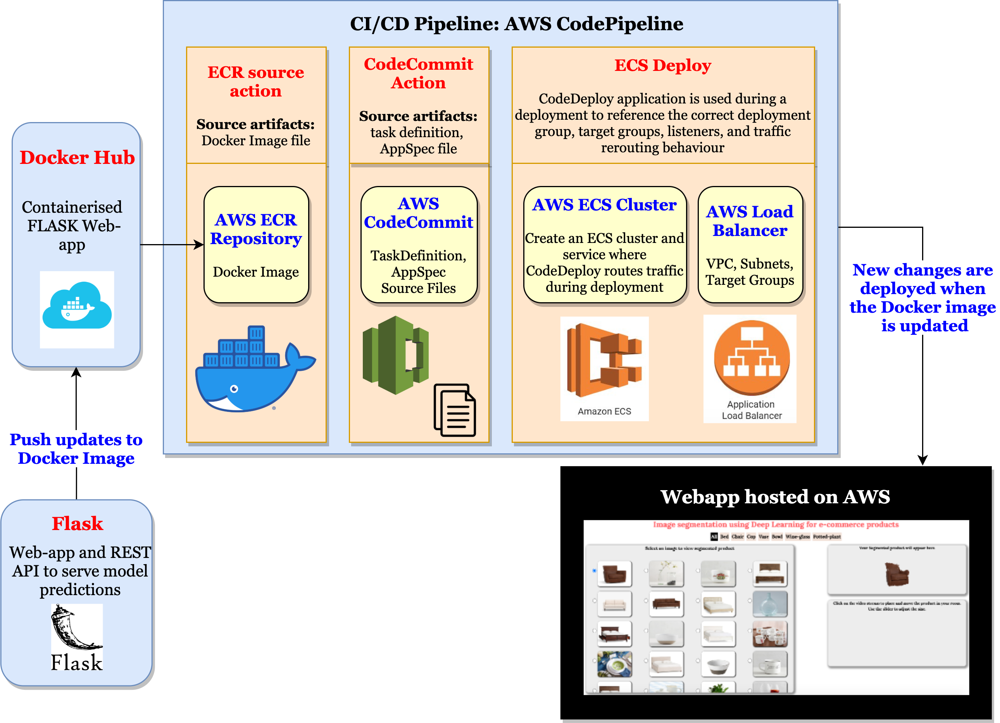
How did you collect data ? Label ? Training prodecure followed, challenges encountered Why did you use the model you ended up using ? Things you learned through this project Biggest challenges What will you change if you have to redo ? Things to improve on